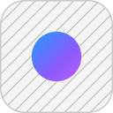

Your security workspace
Bring your findings into focus.
Review reports, explore source code, and turn security findings into clear next steps.
Start with a report
Drop reports, source bundles, or a workspace here.
Or reopen a report from the sidebar.
Reports
- DeepView
- Claude Security
- Codex Security
- DeepSec
- Piolium
Bundles

Stasis- Sourcemaps
Workspaces
- Workspace exports
Links
- Linked findings
Review locally in your browser. Sync across devices when you need it.